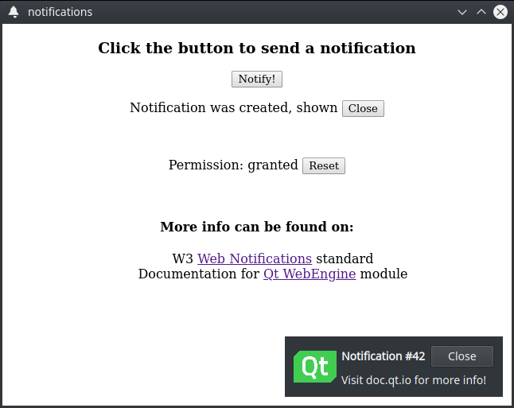

WebEngine Notifications Example
Demonstrates how to pass HTML5 web notifications to users.

WebEngine Notifications demonstrates how to use the QWebEngineProfile::setNotificationPresenter() method and QWebEngineNotification class to show an HTML5 web notification to the user.
Running the Example
To run the example from Qt Creator, open the Welcome mode and select the example from Examples. For more information, visit Building and Running an Example.
HTML Page
In this example, we create an internal HTML page that is added through a resource collection file (.qrc). The page displays buttons for requesting permissions and contains necessary JavaScript code to trigger this request:
Notification.requestPermission().then(function (permission) {
if (permission == 'granted')
createNotification()
})
Also page contains a button for creating a notification. The following JavaScript constructions are executed on the press event:
function createNotification() {
let title = 'Notification #' + ++notificationsCreated
let options = { body: 'Visit doc.qt.io for more info!', icon: 'icon.png', }
let notification = new Notification(title, options)
}
Main Function
In the main function, we instantiate a QWebEngineView, load our internal HTML page, and set up the required callbacks for notifications handling.
Requesting Feature Permissions
We then use the QWebEnginePage::featurePermissionRequested() call to request the user's permission to show notifications on their device.
QObject::connect(view.page(), &QWebEnginePage::featurePermissionRequested,
[&] (const QUrl &origin, QWebEnginePage::Feature feature) {
if (feature != QWebEnginePage::Notifications)
return;
view.page()->setFeaturePermission(origin, feature, QWebEnginePage::PermissionGrantedByUser);
});
Handling New Notifications
We then construct a NotificationPopup that encapsulates the data of the HTML web notification. We also use the QWebEngineProfile::setNotificationPresenter() call to set our handler, which we use in conjunction with our popup to handle all new notifications.
auto popup = new NotificationPopup(&view);
profile->setNotificationPresenter([&] (std::unique_ptr<QWebEngineNotification> notification)
{ popup->present(notification); });
Presenting Notifications to Users
The NotificationPopup class in this example is a simple QWidget-based class that uses multiple QLabel instances for displaying the notification's title, message, and icon.
class NotificationPopup : public QWidget { Q_OBJECT QLabel m_icon, m_title, m_message; std::unique_ptr<QWebEngineNotification> notification;
Presenting Notifications
Inside the present method, we first close and release the previous notification if we have one and then take ownership of a new notification by calling the std::unique_ptr::swap method on our internal notification instance.
void present(std::unique_ptr<QWebEngineNotification> &newNotification)
{
if (notification) {
notification->close();
notification.reset();
}
notification.swap(newNotification);
Then we query the notification instance for a title, a message, and an icon by calling QWebEngineNotification::title(), QWebEngineNotification::message(), QWebEngineNotification::icon() and set up the appropriate labels in our popup.
m_title.setText("<b>" + notification->title() + "</b>");
m_message.setText(notification->message());
m_icon.setPixmap(QPixmap::fromImage(notification->icon()).scaledToHeight(m_icon.height()));
After that we are ready to display our notification to the user by calling the QWidget::show() method. On this step we also call the QWebEngineNotification::show() method to notify JavaScript code about our show event.
show();
notification->show();
Finally, we set up a callback to handle the close event from the JavaScript side by connecting to the QWebEngineNotification::closed() signal. We also schedule a timer event to close our active notification automatically.
connect(notification.get(), &QWebEngineNotification::closed, this, &NotificationPopup::onClosed);
QTimer::singleShot(10000, notification.get(), [&] () { onClosed(); });
}
Closing Active Notification
We execute the close step for the currently active notification either by timeout or by handling the JavaScript event. First, we hide the popup widget itself by calling QWidget::hide(). Then, we notify the JavaScript code by calling the QWebEngineNotification::close() method. Finally, we destroy the notification object through the std::unique_ptr::reset() method.
void onClosed()
{
hide();
notification->close();
notification.reset();
}
Implementing User Interaction
To implement the click step for a notification, we handle mouse interaction through QWidget::mouseReleaseEvent(). On this event, the JavaScript code is notified by calling the QWebEngineNotification::click() method. Then we automatically perform the close step as a notification is considered fully handled and no longer needed, and therefore can be destroyed.
void mouseReleaseEvent(QMouseEvent *event) override
{
QWidget::mouseReleaseEvent(event);
if (notification && event->button() == Qt::LeftButton) {
notification->click();
onClosed();
}
}